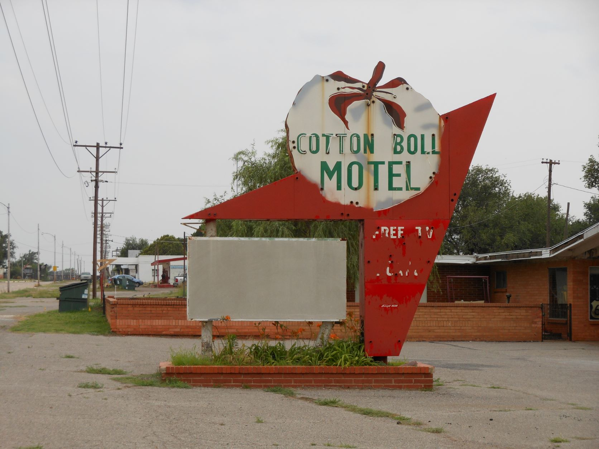
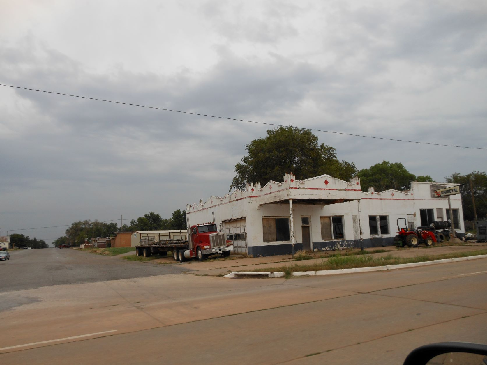
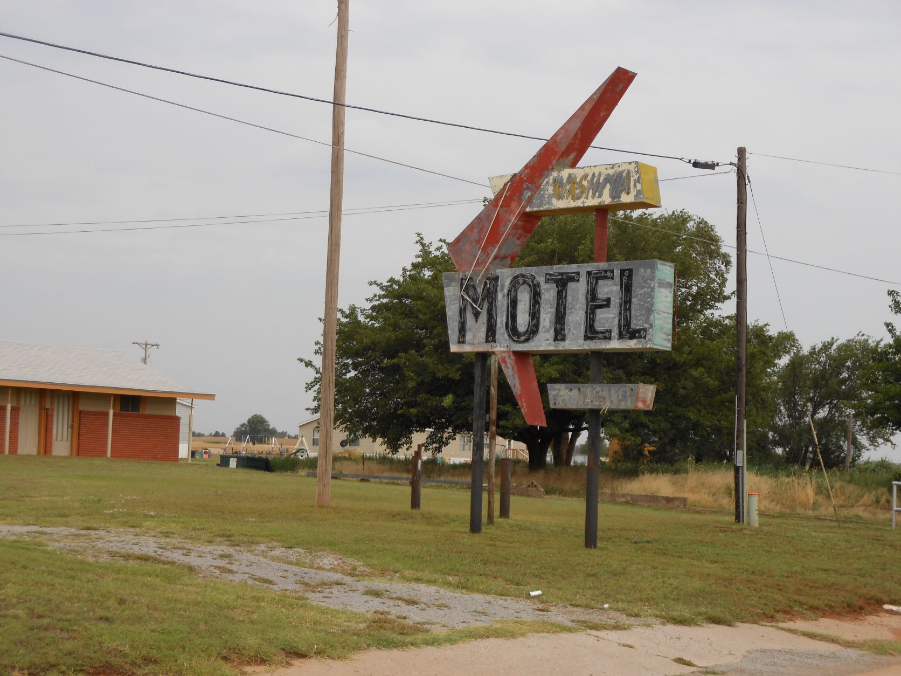

June 12, 2012 - Canute, OK

Cotton Bowl Motel - (closed) - Is now used as a residence.

Former gas station now used as a mechanic shop - drive-by photo

Abandoned Washita Motel (closed) - Is now used as a residence.